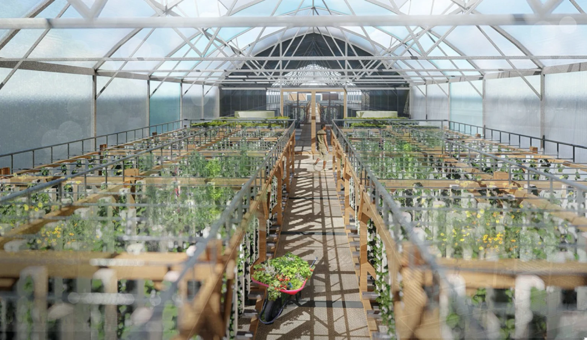

Façade — Caluire-et-Cuire
Une oasis urbaine
Plantation intensive, espace racinaire aussi grand que possible, bacs dessinés sur mesure : chaque appartement gagne un extérieur proche de la nature.

Terrasse sous pergola
Principe 04 — Végétale
Au centre de nos conceptions se trouve l’humain, mais aussi la végétation déjà présente ou à développer. Nature et architecture se mêlent, de préférence sans installation high-tech et en lien direct avec le sol.
Des murs végétalisés aux toits verts, en passant par les jardins suspendus et les cours intérieures, les plantes apportent une dimension esthétique et sensorielle, un bon climat intérieur et une bonne qualité de l’air.
Plantation intensive, espace racinaire aussi grand que possible, bacs dessinés sur mesure : chaque appartement gagne un extérieur proche de la nature.

Sur un terrain presque entièrement imperméabilisé : plantes qui ombragent les façades, toits devenus terrasses vertes, agriculture urbaine expérimentale.

La dalle d’accès au garage devient un jardin praticable : la voiture électrique se gare sur un potager d’herbes aromatiques, entouré de jardins verticaux.

Au-dessus du dojo et des logements, une terrasse sur le toit aménagée avec beaucoup de verdure.

Une barge fluviale transformée en serre flottante : l’aquaponie associe culture de plantes et pisciculture, au plus près des marchés.

Nos bâtiments deviennent des écosystèmes vivants, où nature et architecture se mêlent.L’approche végétale d’architecture4future
Pourquoi planter
Par l’évapotranspiration, les plantes réduisent sensiblement la chaleur en ville et la température ressentie.
Une végétation bien implantée retient l’eau de pluie ou la restitue de manière différée, et réduit le risque d’inondation.
Un habitat pour de nombreuses espèces, des corridors écologiques préservés ou rétablis au cœur des villes.
La présence du végétal réduit l’agressivité, favorise la convivialité et le rapport à la nature.
Palette végétale
Figuiers dans le jardin commun de Vienne, cactus dans la cour de la maison Jarret, herbes aromatiques sous la voiture de la Tiny House : chaque projet a sa palette.
Présenter les espèces que l’architecte aime planter (grimpantes de façade, arbres de cour, aromatiques, plantes d’intérieur…), avec une photo et un mot sur chacune.